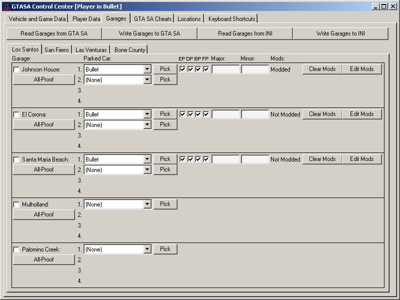
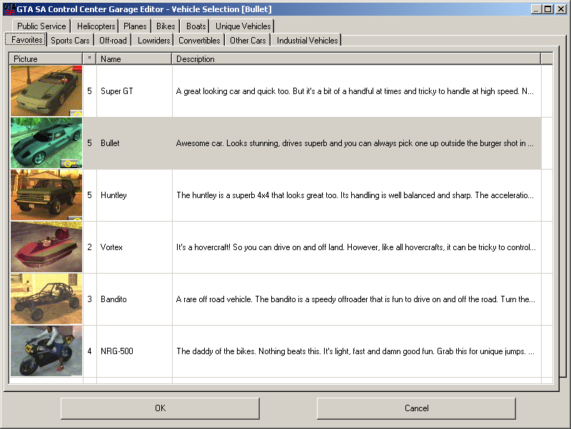
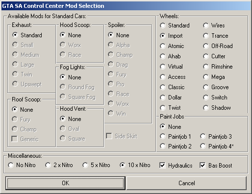

There are 17 garages in GTA SA, each holding up to 4 vehicles. The garages are of different sizes, but still can hold up to 4 vehicles. The control center will try to park the vehicles at optimized locations within the parkable area of the given garage. However, if you park 4 cars in a small garage, you might not get in any of the cars, or the cars might get stuck into eachother. Each time you alt+tab out of the game, the control center reads your garages, and shows the parked vehicles with all modding details, colors etc. You can change car specialities, park new cars in garages using the vehicle selection combo, or vehicle selection form:

or mod your vehicles using the vehicle mod selection window:

Which vehicles are parkable, and what kind of mods each vehicle can have, which color will be assigned to a newly selected vehicle is set in GTASAData.dat file.
You can edit this file to change the garage editor behaviour. You can also lock the specs and the parked cars using the checkbox for each garage. In that case, the control center will check the garage door status during game play, and as a garage door closes, it parks the selected vehicles automatically in the given garage. So if you drive a car out of a garage, the car gets aoutomatically reparked. However, if you park a new car, it will disappear, as the control center will change the garage. This applies to the mods as well. If you have previously selected a mod for a vehicle, and locked the garage specs, the current mods also gets changed on the vehicles automatically.
The garage editor respects also the special abilities of given vehicles as well. So if you park a monster truck in a garage using the control center, it will have rear-wheel dynamics.
After changing the parked vehicles, please do not forget to click on 'Write garages to GTA SA' button, so that your vehicle selection can be written back to the GTA SA memory. You can save / load your favorite selection from the ini file using 'read garages from ini' and 'write garages to ini' buttons. If you have changed your garages, but want to cancel your changes, please click on 'read garages from GTA SA' button to reread the game memory.
The Vehicle Selection window reads its settings from the GTASACarPics.dat file. Please edit this file if you want to change the tabs that the vehicles are assigned to. In addition to 12 vehicle category tabs, there is a 'favorites' tab to help you in selecting vehicles. Using the right mouse click, you can assign a given vehicle to favorites, or remove a vehicle from favorites.
The thumbnails are courtesy of www.g-unleashed.com, and they are from the X-Box version of GTA SA. So the car pictures may slightly differ from the PC version. The '*' column near the car thumbnail represent the Sex Appeal of the car as informaiton. The descriptions are also from g-unleashed.com. If you want to read the full description, you can resize the Description column on this selection list-box and scroll right to read.
You can edit/change car names, descriptions and thumbnails by editing the relevant files (see Appendix A). The garages are represented on 4 tabs, LS/SF/LV/Desert, respecting their locations in game, and the available space on the control center.